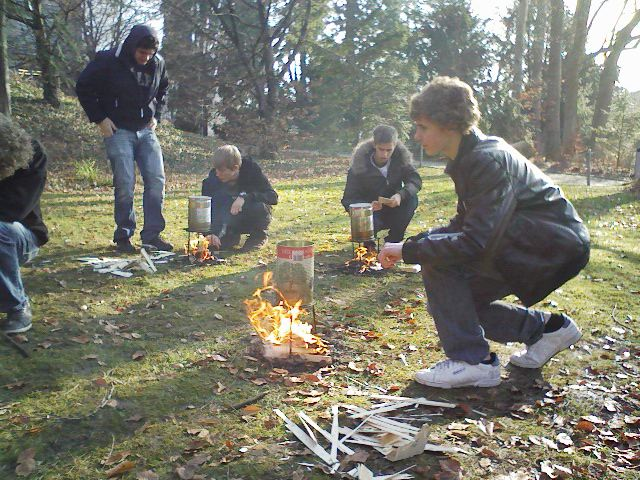

Naturwissenschaftliche Blockwoche 2009
In der Woche vom 2. bis 6. Februar 2009 führte das MNG Rämibühl zum zweiten Mal eine naturwissenschaftliche Blockwoche zum Oberthema Energie durch. Die Schülerinnen und Schüler der dritten Klassen besuchten Plenarveranstaltungen sowie Podiumsdiskussionen. Jede Gruppe bearbeitete zwei Projekte.
In unserem (Ch. Clerc, G. Plaza, M. Lieberherr) Projekt "Energie aus Abfall" versuchten meine Gruppen wieder, den spezifischen Heizwert von Abfall zu messen. Wir haben meinen Weihnachtsbaum sowie einige Holzkistchen verbrannt und die Erwärmung von Wasser gemessen. Durch Vergleich mit einer Eichmessung (Brennsprit) konnten wir die richtige Grössenordnung des Heizwerts berechnen. In folgenden einige Eindrücke von einer Gruppe:

4. Feb. 2009 / Martin Lieberherr